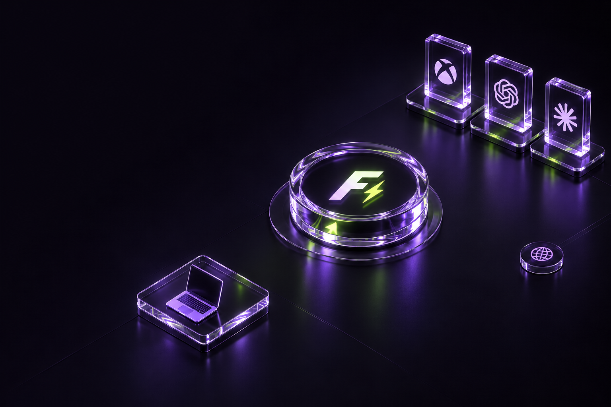

Открой настройки сети
Выбери ручную настройку DNS

DNS ДЛЯ ИГР И СЕРВИСОВ
Smart DNS для Xbox, Game Pass, ChatGPT и других сервисов. Подключи Fast-DNS на своём устройстве.
ПОДКЛЮЧЕНИЕ / FAST-DNS
Выбери ручную настройку DNS
Сохрани настройки и открой сервис
Второй адрес не предоставлен. Не добавляй публичный DNS как запасной: часть запросов может пройти мимо Fast-DNS.
Если подключение не сработалоПроверь, не переопределяют ли DNS настройки браузера, VPN или «Частный DNS». При проблемах с IPv6 проверь настройки роутера. Для отката верни автоматическое получение DNS.
ТВОЯ ЦИФРОВАЯ ВСЕЛЕННАЯ
Игры, нейросети и инструменты для работы.
Выбери, что важно тебе.
Сервисы добавлены в текущую конфигурацию Smart DNS. Доступность зависит от сети и самого сервиса.

СервисыТвоё устройствоFast-DNS / DEОстальные сайтынапрямуюSmart DNS не заменяет VPN и не гарантирует снижение пинга.
БЕЗ МЕЛКОГО ШРИФТА
Smart DNS помогает с маршрутизацией к выбранным сервисам. Скорость интернета, время загрузки игр и пинг зависят от провайдера, маршрута и серверов игры. Fast-DNS не гарантирует их улучшение.
В текущую конфигурацию включены домены Xbox и Game Pass, ChatGPT и OpenAI, Claude, Gemini и AI Studio, Microsoft Copilot, GitHub Copilot, JetBrains, Framer и Spotify. Это список настроенных направлений, а не гарантия работы каждой функции: ограничения аккаунта и подписки остаются.
Домены assets1.xboxlive.com, assets2.xboxlive.com, dlassets.xboxlive.com и download.jetbrains.com разрешаются напрямую. Аудио Spotify на доменах *.akamaized.net не проксируется — доступ к интерфейсу не гарантирует воспроизведение музыки.
Текущая конфигурация Fast-DNS фильтрует ответы AAAA для всех доменов. Это не отключает IPv6 на устройстве: другой DNS или сохранённые адреса могут обходить выбранный маршрут. При проблемах проверь DNS и IPv6 на устройстве и роутере.
Нет. Smart DNS не создаёт зашифрованный туннель для всего трафика. В текущей конфигурации включено журналирование DNS-запросов. Не следует считать этот сервис анонимным DNS.
Верни автоматическое получение DNS в настройках устройства или роутера, затем переподключись к сети. Если адрес был указан в нескольких местах, убери его в каждом из них.
ТВОЙ СЛЕДУЮЩИЙ УРОВЕНЬ